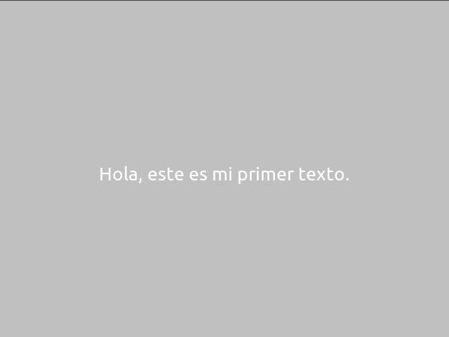

Textos
Los objetos que muestran texto en pantalla se tratan de manera similar a los actores. Por lo tanto, si ya sabes usar actores, no tendrás problemas en usar cadenas de texto.
Crear cadenas de texto
El objeto que representa texto se llama Texto y
está dentro del modulo actores.
Para crear un mensaje tienes que escribir:
texto = pilas.actores.Texto("Hola, este es mi primer texto.")
y tu cadena de texto aparecerá en pantalla en color negro y con un tamaño predeterminado:

Si quieres puedes escribir texto de varias lineas usando el caracter
\n para indicar el salto de linea.
Por ejemplo, el siguiente código escribe el mismo mensaje de arriba pero en dos lineas:
texto = pilas.actores.Texto("Hola (en la primer linea)\n este es mi primer texto.")
Los textos son actores
Al principio comenté que los textos también son actores, esto significa que casi todo lo que puedes hacer con un actor aquí también funciona, por ejemplo:
texto.x = 100
texto.escala = 2
incluso también funcionarán las interpolaciones:
texto.rotacion = pilas.interpolar(360)
Propiedades exclusivas de los textos
Existen varias propiedades que te permitirán alterar la apariencia de los textos.
Esta es una lista de los mas importantes.
- color
- magnitud
- texto
Por ejemplo, para alterar el texto, color y tamaño de un texto podría escribir algo así:
texto.magnitud = 50
texto.color = (0, 0, 0) # Color negro
texto.color = (255, 0, 0, 128) # Color rojo, semi transparente.
texto.texto = "Hola, este texto \n tiene 2 lineas separadas"
Mostrando mensajes en pantalla
Si bien podemos crear actores Texto y manipularlos como
quedarmos, hay una forma aún mas sencilla de imprimir mensajes
para los usuarios.
Existe una función llamada avisar que nos permite mostrar
en pantalla un texto pequeño en la esquina izquierda inferior
de la pantalla.
pilas.avisar("Hola, esto es un mensaje.")
Esto te facilitará mucho el código en los programas pequeños como demostraciones o ejemplos.